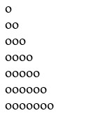

Інвестор вклав S тис. грн на 20 років під 20% річних. Визначити за допомогою циклів суму, яку він одержить (без оподаткування).
Вивести на екран
Відобразити трикутник за допомогою символів «о»

З клавіатури поступово вводяться символи поки не буде введено символ «а». Вивести рядок символів у зворотному порядку
Дано натуральні числа від 20 до 50. Надрукувати ті з них, які діляться на 3, але не діляться на 5.